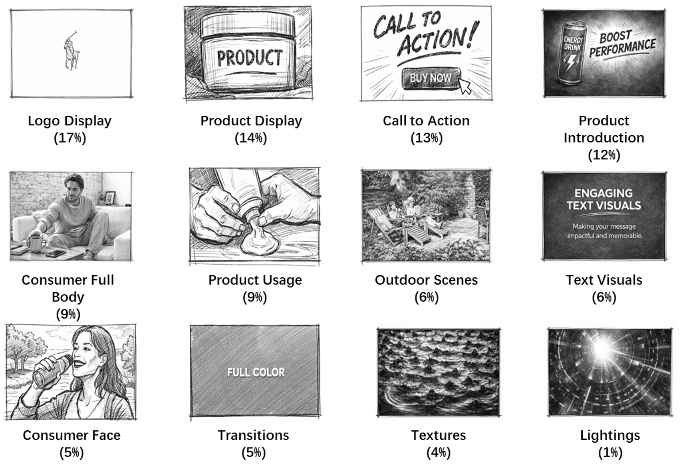
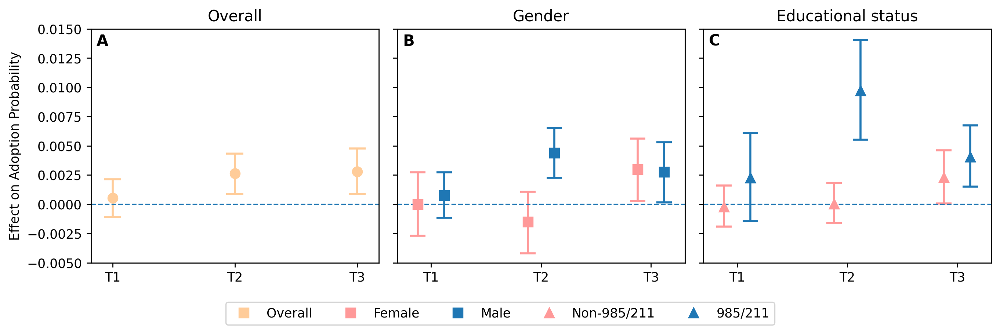
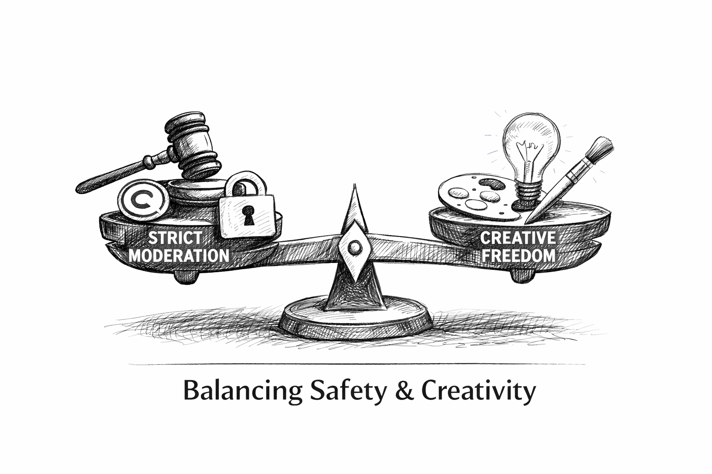

Job Market Paper
Learning Interpretable Building Blocks of Video Creatives
Video advertisements unfold as sequences of creative elements that directors actively design—what to show, in what order, and when to reveal key information such as the product and brand. Yet actionable guidance remains limited because video is high-dimensional and many existing models rely on latent embeddings that do not translate into editable creative decisions. We propose an interpretable-by-design framework that represents each advertisement as a sequence of visual building blocks (e.g., product display, consumer face) drawn from a shared storyboard of 12 recurring blocks learned across all ads. Applying the method to public datasets with delayed ad-recall outcomes, we show that the model yields faithful, human-interpretable explanations while achieving predictive performance comparable to black-box video models and outperforming approaches based on handcrafted features. Finally, we demonstrate the model’s practical value in an experiment that manipulates storyboard-based creative choices, providing evidence that improving predicted storyboards translates into improved advertising outcomes.

Selected Research
Visual Homophily in Consumer Imagery: A New Behavioral Signal for Preference Modeling
Across platforms such as Yelp, TripAdvisor, and Google Reviews, consumers share millions of photos capturing what they eat, where they go, and how they experience brands. These images are more than decoration; they are expressions of taste. This research introduces visual similarity—the degree to which a consumer’s photos resemble those of a business—as a behavioral signal of preference alignment. Using over five million Yelp photos from 20,000 restaurants, we measure two forms of similarity: object similarity (what is shown) and aesthetic similarity (how it looks). Both predict satisfaction beyond text and ratings, with aesthetic similarity especially important for ambiance-driven experiences such as restaurant interiors. From a managerial perspective, visual similarity offers a new, privacy-respectful tool for personalization and brand strategy. Platforms can enhance recommendations for new users or under-reviewed businesses by matching them with consumers who “see the world” similarly. Businesses can diagnose whether their imagery attracts the right audiences and adjust visual branding accordingly. By showing that how consumers see systematically predicts what they like, this work reframes consumer photos as actionable behavioral data that links visual identity, preference, and experience.

Encouraging Artificial intelligence Adoption: Experimental Evidence from an Educational Platform
Gen AI are increasingly embedded in digital platforms, yet their benefits hinge not only on how many users adopt them but also on who adopts. We study how platforms can steer both adoption and adopter composition through information design. In a preregistered field experiment conducted with a large coding-education platform during a nationwide competition (8,819 participants), we randomly vary the introduction message of an in-house AI assistant. We found that emphasizing either downstream performance gains or privacy protection—layered on an identical baseline capability description—increases usage by roughly 2.5 percentage points over the 35-day period, but the two imformation have sharply different distributional consequences: performance imformation disproportionately attracts male students and those from more selective universities, whereas we do not find similar effect for privacy imformation. These findings contribute to research on technology adoption and information design by showing that usefulness- and trust-oriented framings can generate similar average adoption gains while meaningfully shifting who participates, highlighting adopter composition as a first-order outcome in AI settings where interaction data are an input to learning and where equity concerns are salient.

When Safety Constrains Creativity: Evidenceof AI Content Moderation on User Engagement
As generative AI platforms mature, content moderation policies are tightening in response to legal, copyright, and brand-safety concerns. While stricter moderation enhances compliance and legitimacy, it may simultaneously reduce perceived creative freedom and increase generation refusals—potentially affecting user engagement and subscription behavior. We study the behavioral and economic consequences of AI content moderation tightening in partnership with a large technology firm operating a commercial AI content-generation platform.
